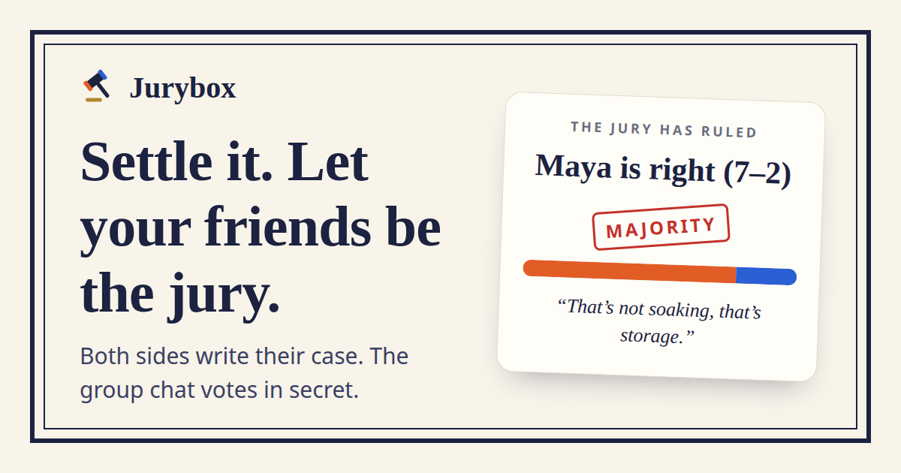

Settle it. Let your friends be the jury.
Write the argument and send one link. The other side adds their case, your group chat votes in secret, and the jury rules when the time runs out: the vote split, the best one-line ruling, and a verdict card to share.

How it works
- Open the case. One line for the argument, two for your side. No account.
- They answer. The other person adds their side from your link, so they agreed to be judged.
- The jury rules. Friends vote in secret (Orange, Blue, or “you’re both wrong”) with an optional one-line ruling. Votes stay hidden until the deadline.
No live argument? Pick one of 40 classic debates (is a hot dog a sandwich, when can the Christmas music start) and the jury opens straight away.
Support
Questions, bugs or a removal request: open an issue.
About
Jurybox is free, with no ads and no sign-up. Read the privacy policy.